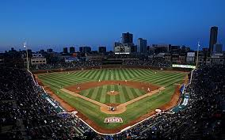

 The Chicago Cubs play their home games at a place called Wrigley Field. Wrigley is a very known baseball field for many reasons. One of the reasons is because they have ivy covering the out field walls. Wrigley was opened on April 23rd, 1914. It has been around for 105 years and has had various professional Chicago teams play at Wrigley Field. This varies anywhere from MLB teams to NFL teams.
Wrigey Field was started on March 4th, 1911 and took three years to complete. It was opened in 1914, on April 23. It cost 250,000 dollars back then, which is equivalent to 6.25 million dollars today. It has been revonated 4 times and expanded three. Wrigley is in the North side of Chicago. It was orginally named Weeghman Park, and shortly after was named Cubs Park. In 1927 it was renamed to Wrigley Field. It is also very well known for the red sign hanging at the entrance to Wrigley Field.